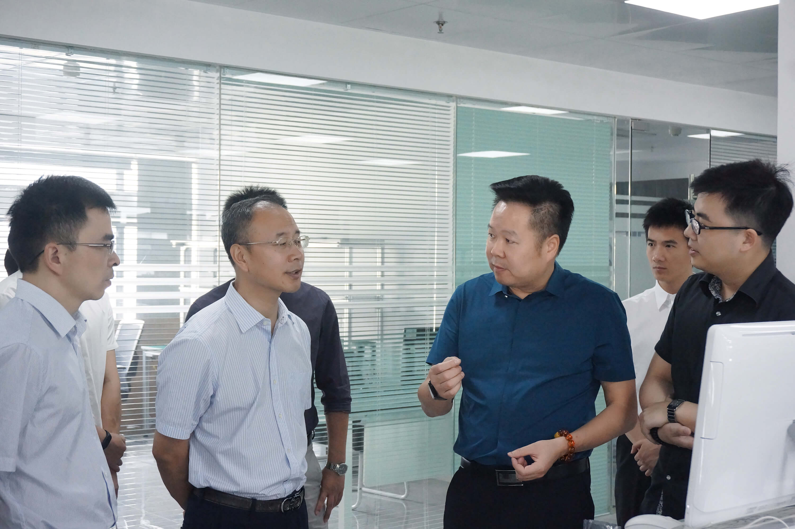
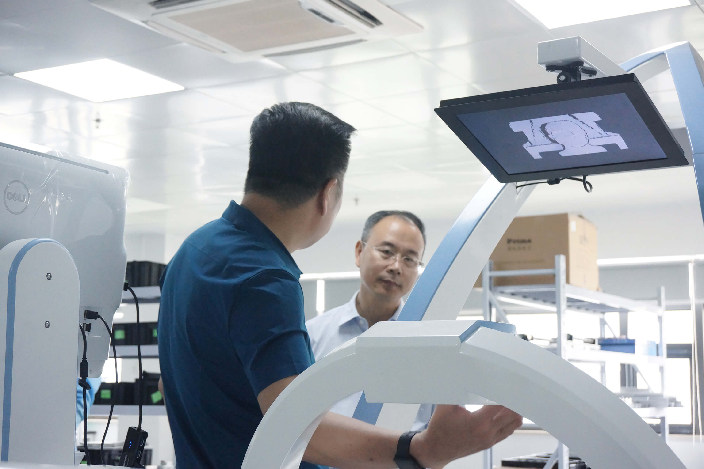
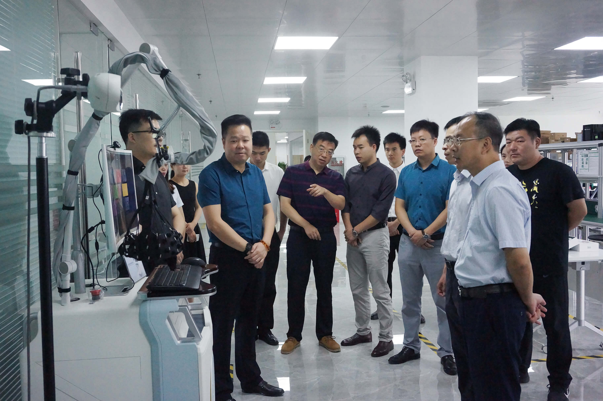
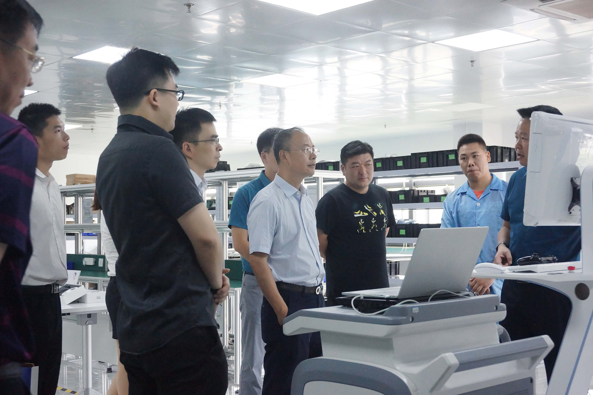
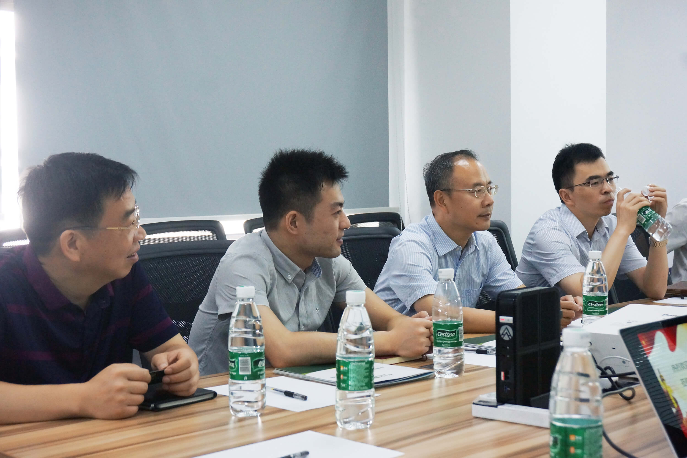
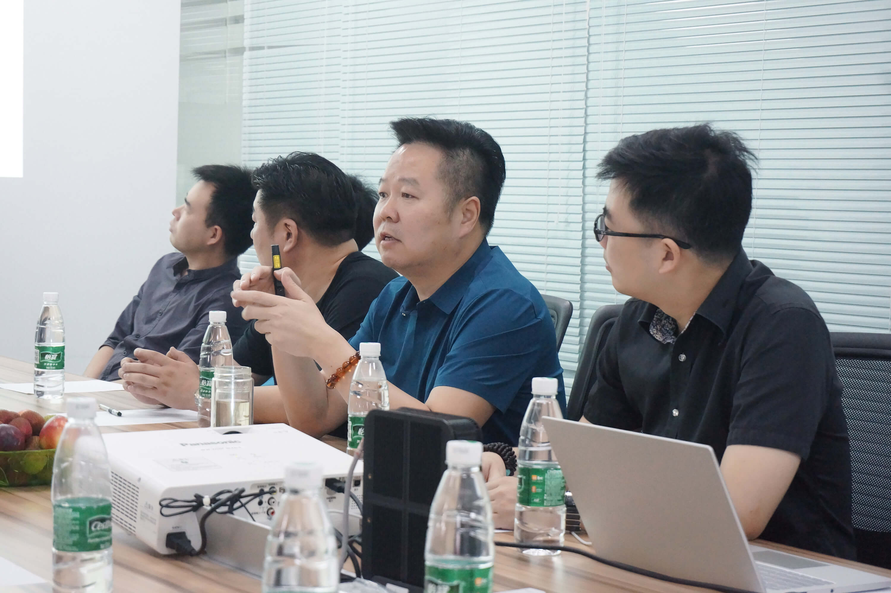

继资联虹康在光谷生博会上完美亮相后，公司始终以科技创新为导向的产品理念给省、市及光谷生物办的各级领导留下了深刻印象。6月13日，光谷生物办钱主任一行莅临资联虹康参观考察，资联虹康董事长蔡胜安及公司高层领导陪同参观，并做了工作汇报。
钱主任一行先后参观了资联虹康的生产车间、研发室、办公区等，详细查看了公司的生产安全、产品质量、人员管理及工作流程。当了解到公司的智能机器人导航系统打破了以往光学导航的传统，是国内首家基于视觉成像以解决TMS治疗过程中精准定位问题的产品时，钱主任对资联虹康在技术革新和产品研发上取得的成绩予以高度肯定，希望资联虹康持续推进自主创新，为产品注入更多科技含量，进一步努力占领市场、引领市场。
  随后，在资联虹康的会议室，钱主任一行听取了蔡董事长对公司的发展规划、战略目标，以及产品的研发、生产、营销、临床使用等情况的介绍。在认真听取汇报后，钱主任认为资联虹康目前的顶层架构布局合理，这对企业的发展是至关重要的。钱主任还指出，脑科学正如火如荼地发展着，资联虹康应当抓住这一契机，加快自身发展步伐；同时，资联虹康还可多与其他科研实力较强的单位、企业开展战略合作，取长补短，共同谱写脑科学技术产业化的伟大新乐章。
 听到资联虹康的产品已经在全国3000多家医院投入使用并取得良好的临床效果时，钱主任非常高兴，鼓励公司加快发展，拓宽产品的发展途径。会议上，随行的其他领导也发言表示，支持公司脑科学技术产业化发展的道路，对公司的资源优势和市场前景表示看好，对公司的未来发展充满信心。
资联虹康是一个以资源集合和资源联网为核心价值的平台式企业，是国内率先提出和实现脑科学技术产业化的先锋。通过本次交流，资联虹康将在政府及光谷生物办的支持和关怀下，更加积极地加大研发投入，为中国“脑计划”的落地发展添砖加瓦，为公司脑科学技术产业化先锋的发展之路迈出坚实的一步。